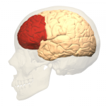
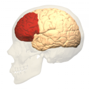
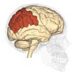
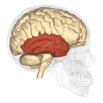
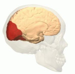

Lobo-Frontal
O lobo frontal, localizado no osso frontal da cabeça é praticamente o principal Lóbulo pois nele está o cortéx motor e o cortéx pré-motor que são responsáveis pelos movimentos voluntários do nosso corpo.
O lobo frontal, localizado no osso frontal da cabeça é praticamente o principal Lóbulo pois nele está o cortéx motor e o cortéx pré-motor que são responsáveis pelos movimentos voluntários do nosso corpo.
Localizado entre o lobo frontal e o lobo occipital encontrasse o lobo parietal, que por sua vez é responsavel pelas informações sensitivas que temos no nosso corpo, dividido em duas áreas: zona anterior e zona posterior.
Responsável pelo reconhecimento e interpretação da nossa audição, o lobo temporal está localizado um próximos aos nossos ouvidos
O lobo occipital é responsável por receber e interpretar as informações que recebemos do ambiente, transformando essas informações em imagens fazendo com que exergamos oque estamos vendo.
